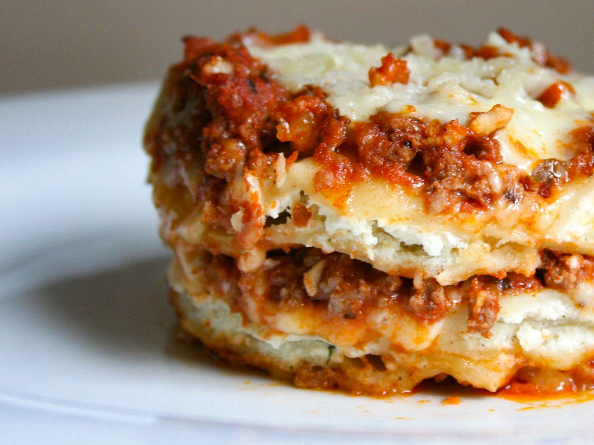

Beefy Baked Ravioli

Description
This recipe is a hit with my wife and everyone else
I've given the recipe to. It's very easy and satisfies that Italian craving.
Ingredients
- 1 pound ground beef
- ½ (25 ounce) package frozen cheese ravioli
- 1 (14 ounce) jar spaghetti sauce
- 1 (14.5 ounce) can diced tomatoes, drained
- 1 cup shredded mozzarella cheese
- 1 cup shredded Monterey Jack cheese
- 1 tablespoon grated Parmesan cheese
Steps
- Preheat the oven to 450 degrees F (230 degrees C).
- Crumble the ground beef into a large skillet over medium-high heat.
Cook and stir until no longer pink. Drain grease, then stir in the
spaghetti sauce and tomatoes.
- Spread 1/3 of the sauce in the bottom of an 11x7 inch baking dish.
Arrange 1/2 of the ravioli over the sauce. Sprinkle 1/2 of the mozzarella
cheese and 1/2 of the Monterey Jack cheese over the ravioli. Repeat layers,
ending with the last of the sauce on top. Cover with aluminum foil.
- Bake for 30 minutes in the preheated oven. Sprinkle Parmesan cheese over
the top before serving.